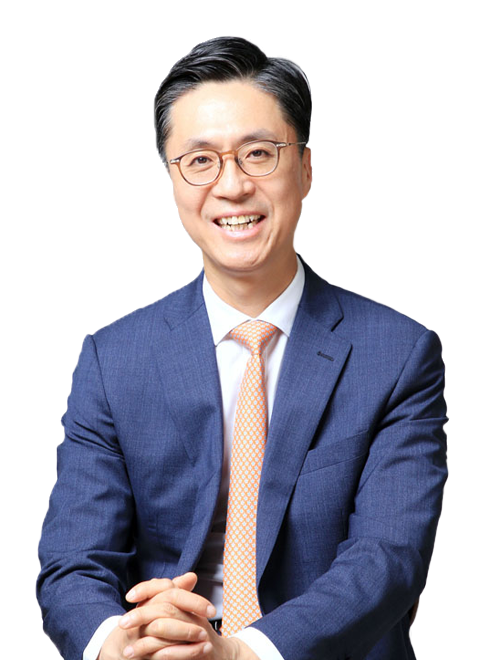

CEO Messege
회장정보
대표이사 송재호
- 경력
- 1992-1998 한국장기신용은행
- 2000-2002 부즈앨런해밀턴 컨설턴트
- 2002-2003 모니터 그룹 프로젝트 매니저
- 2003-2005 경동도시가스 기획이사
- 2005-2015 경동도시가스 대표이사 사장
- 2006 울산대학교 겸임교수
- 2010 울산상공회의소 부회장
- 2014.02 경동 대표이사 회장
- 2015-2018 국제가스연맹(IGU) 부회장
- 2015.11 울산과학기술원(UNIST) 이사
- 2016.03 경동도시가스 대표이사 회장
- 2020.01 제15대 한국도시가스협회 회장
경동의 새로운 미래를 상상합니다.
경동도시가스는 지난 10년 간 '혁신'이라는 수식어와 함께 성장해왔습니다. 탁월한 안전관리체계를 바탕으로 '안전 1위' 기업의 영예를 이어가고 있는 것, 고객을 중심에 둔 경영활동으로 업계 최초의 '소비자중심경영(CCM)'기업의 이름을 얻은 것, 더 이상의 성장을 기대할 수 없다는 도시가스 산업에서 LNG의 새로운 가능성을 발굴해 성장의 역사를 만들어 낸 것 모두가 '혁신기업 경동도시가스'가 이룬 눈부신 성과입니다.
고객에게 더 나은 가치를 제공해야 한다는 사명과 끊임없는 혁신의 열정을 토대로 이제 우리는 지난 과거, 다른 경쟁자와도 차원이 다른 회사로 새로운 여정을 준비하고 있습니다.
에너지 공급자가 아닌 '솔루션 프로바이더(Solution Provider)'가 되기 위한 역량에 집중하고, 깊이 있는 솔루션을 제공하기 위한 '플랫폼'을 구축해 다양한 파트너와 솔루션 생태계를 구축해 나갈 것입니다. 또, 미래 에너지로서 LNG의 새로운 가치를 발굴하여 소중하고 아름다운 환경을 보존하는데도 최선의 노력을 다할 것입니다.
미래는 예측하는 것이 아니라 창조하는 것이라는 말처럼 과거와는 다른 열정으로, 고객이 중심이 되고 고객이 공감하는 혁신을 향해 더욱 새로워지는 경동도시가스의 모습을 기대하여 주십시오. 또, 틀을 깬 상상으로 새로운 내일을 꿈꾸는 경동도시가스의 도전에 함께하여 주시고, 고객 여러분의 삶에도 늘 새로운 도전이 함께하시길 기원합니다.